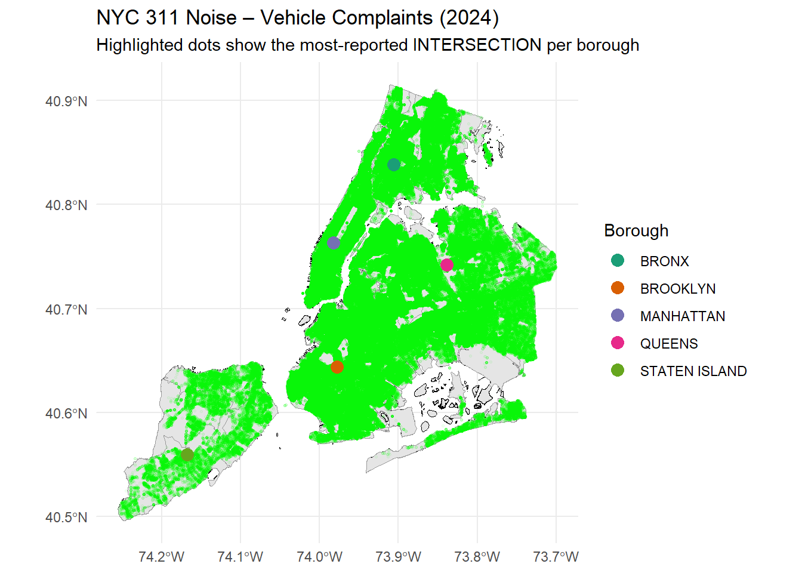
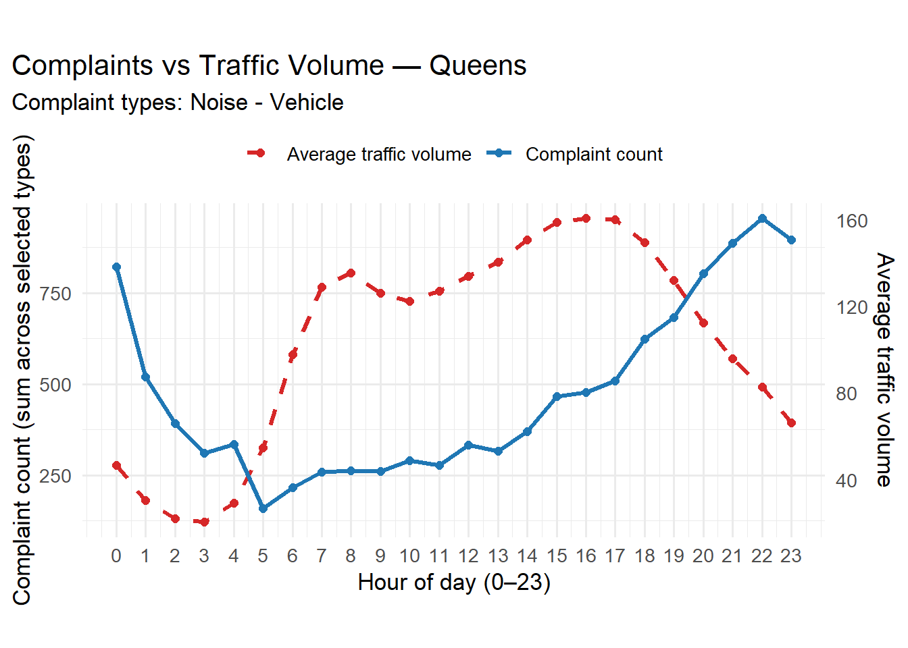
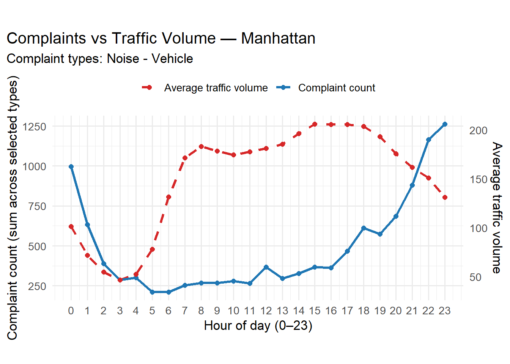
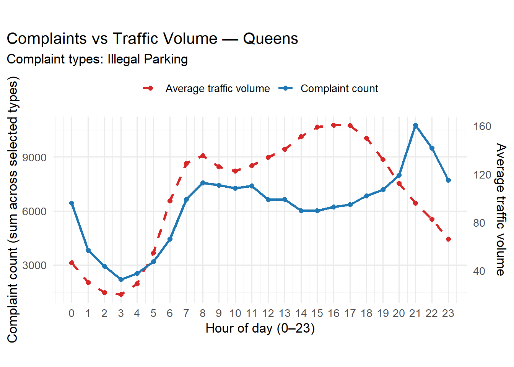
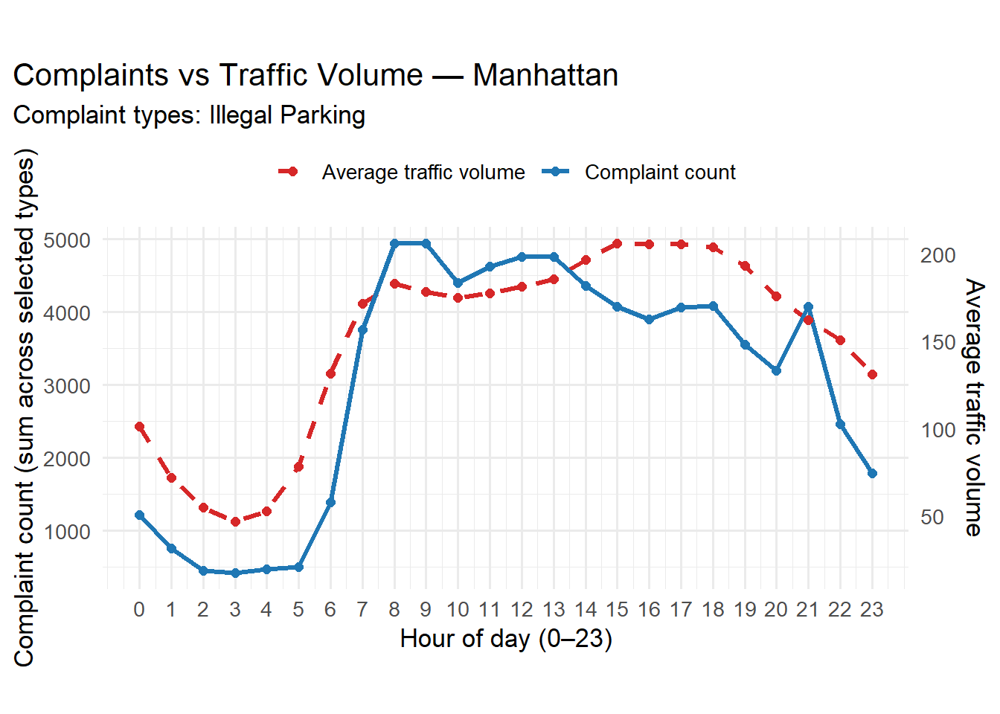
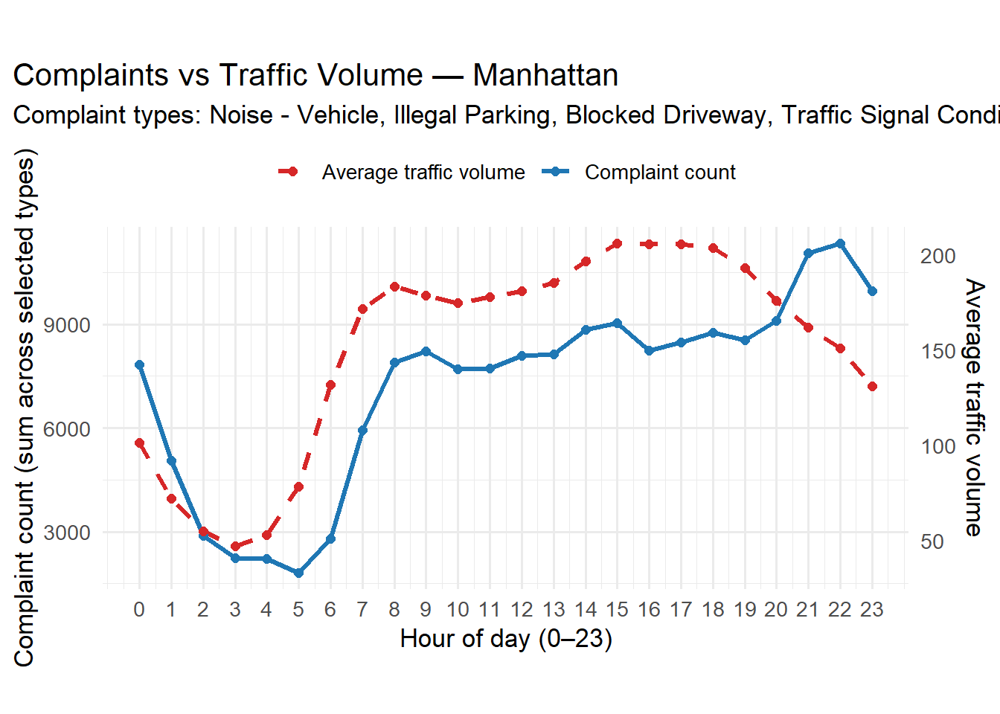
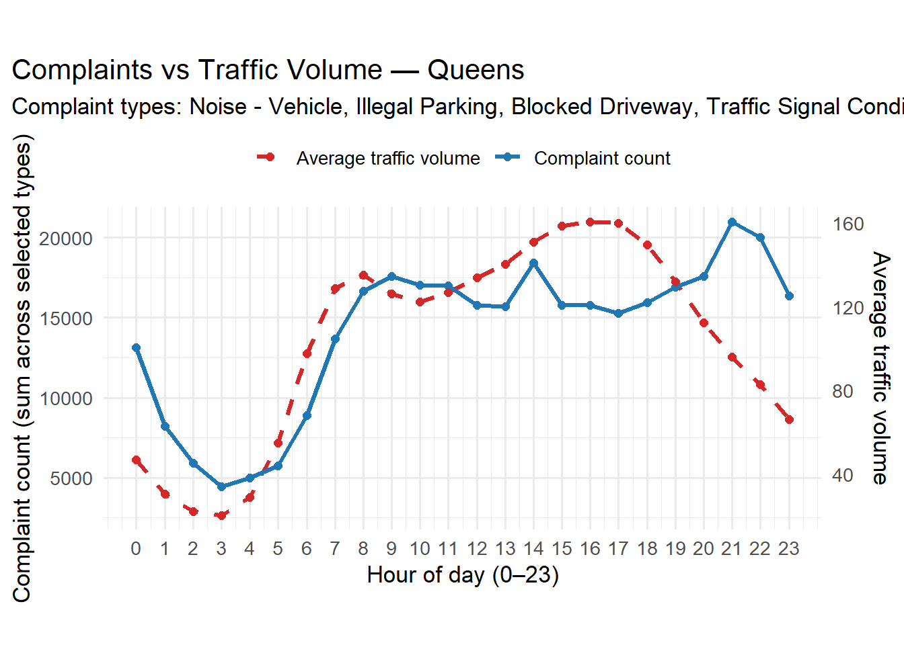

CODE: Dependencies
library(httr2)
library(readr)
library(dplyr)
library(stringr)
library(lubridate)
library(sf)
library(ggplot2)
library(scales)
library(knitr) 
Lets take a closer look into how traffic impacts the daily lives of NYC residents. In order to accomplish this, we will use the dataset from the “311 Service Requests”, which holds complaints that the residents of New York make every day. We will look into specific issues regarding traffic. This means that we will also need traffic data. For this other dataset we will use the “Automated Traffic Volume Counts”, both datasets come from NYC Open Data.
The specific question I will tackle is the following. What statistically significant street-level spatial hot-spots and hour/day temporal hotspots exist for traffic related complaints?
When it comes to the street level insights, we will uncover some of the busiest intersections that exists in NYC, as well as taking a look at the map with all of the relevant complaints mapped out. As for the time hotspots, we will examine how relevant complaints to traffic shift throughout the day and compare the data with that of the traffic volume.
library(httr2)
library(readr)
library(dplyr)
library(stringr)
library(lubridate)
library(sf)
library(ggplot2)
library(scales)
library(knitr) format_numbers_kable <- function(df, decimals = 2, format = "simple", exclude = NULL) {
df_fmt <- df |>
# Format numeric columns except excluded ones
mutate(
across(
where(is.numeric) & !all_of(exclude),
~ number(.x,
big.mark = ",",
accuracy = 10^(-decimals))
)
) |>
# Convert all columns to character for consistent printing
mutate(across(everything(), as.character)) |>
# Clean header names
rename_with(~ .x |>
str_replace_all("_", " ") |>
str_to_title()
)
kable(df_fmt, format = format)
}base_url <- "https://data.cityofnewyork.us/resource/erm2-nwe9.csv"
batch_dir <- "data/311_batch" # folder for per-batch files
batch_pattern <- "^nyc_311_2024_batch_(\\d+)\\.csv$"
cols <- c(
"unique_key",
"created_date",
"agency",
"complaint_type",
"descriptor",
"location_type",
"incident_zip",
"incident_address",
"street_name",
"cross_street_1",
"cross_street_2",
"intersection_street_1",
"intersection_street_2",
"address_type",
"city",
"landmark",
"borough",
"x_coordinate_state_plane",
"y_coordinate_state_plane",
"latitude",
"longitude",
"location"
)
where_2024 <- "created_date between '2024-01-01T00:00:00' and '2024-12-31T23:59:59'"
batch_size <- 50000
# Force consistent column types (all character to avoid bind_rows issues)
col_spec <- cols(.default = col_character())
#-------------------------------------------------------------------
# Helper: figure out where to resume (batch index + offset)
#-------------------------------------------------------------------
get_resume_state <- function() {
if (!dir.exists(batch_dir)) {
dir.create(batch_dir, recursive = TRUE)
return(list(next_batch_id = 1L, offset = 0L))
}
existing_files <- list.files(batch_dir, pattern = batch_pattern, full.names = FALSE)
if (length(existing_files) == 0) {
return(list(next_batch_id = 1L, offset = 0L))
}
# Extract batch numbers from filenames
batch_nums <- str_match(existing_files, batch_pattern)[, 2]
batch_nums <- as.integer(batch_nums[!is.na(batch_nums)])
max_batch <- max(batch_nums)
# Each batch uses limit = batch_size and no overlap,
# so starting offset for the *next* batch is:
offset <- (max_batch) * batch_size
list(next_batch_id = max_batch + 1L, offset = offset)
}
#-------------------------------------------------------------------
# Download in batches with httr2, writing each batch to disk
#-------------------------------------------------------------------
download_311_2024_batches <- function() {
resume <- get_resume_state()
batch_id <- resume$next_batch_id
offset <- resume$offset
message(sprintf("Starting (or resuming) at batch %d, offset %d", batch_id, offset))
repeat {
message(sprintf("Requesting batch %d (offset = %d)...", batch_id, offset))
req <- request(base_url) |>
req_url_query(
"$select" = paste(cols, collapse = ","),
"$where" = where_2024,
"$limit" = batch_size,
"$offset" = offset
)
resp <- req |> req_perform()
raw_csv <- resp |> resp_body_raw()
chunk <- read_csv(raw_csv, col_types = col_spec, show_col_types = FALSE)
if (nrow(chunk) == 0) {
message("No more rows returned; finished downloading.")
break
}
# Write this batch immediately to disk
out_path <- file.path(batch_dir, sprintf("nyc_311_2024_batch_%04d.csv", batch_id))
write_csv(chunk, out_path)
message(sprintf(" Retrieved %d rows and wrote '%s'.", nrow(chunk), out_path))
if (nrow(chunk) < batch_size) {
message("Last (partial) batch received; stopping.")
break
}
offset <- offset + batch_size
batch_id <- batch_id + 1L
Sys.sleep(0.25) # be polite to the API
}
}
# write and read final file
final_file <- "data/nyc_311_2024_full.csv"
load_all_311_2024_batches <- function(write_final = FALSE) {
if (!dir.exists(batch_dir)) {
stop("Batch directory does not exist: ", batch_dir)
}
files <- list.files(batch_dir, pattern = batch_pattern, full.names = TRUE)
if (length(files) == 0) {
stop("No batch files found in: ", batch_dir)
}
message(sprintf("Loading %d batch files...", length(files)))
dfs <- lapply(files, function(f) {
read_csv(f, col_types = col_spec, show_col_types = FALSE)
})
df <- bind_rows(dfs)
if (write_final) {
dir.create(dirname(final_file), recursive = TRUE, showWarnings = FALSE)
write_csv(df, final_file)
message(sprintf("Wrote combined data to '%s'.", final_file))
}
df
}
#-------------------------------------------------------------------
# use final combined file if present; otherwise build it
#-------------------------------------------------------------------
if (file.exists(final_file)) {
message(sprintf("Final file '%s' exists. Loading for analysis...", final_file))
data_311_2024 <- read_csv(final_file, col_types = col_spec, show_col_types = FALSE)
} else {
message(sprintf("Final file '%s' not found. Ensuring batches are downloaded...", final_file))
# This will resume from whatever batches we have
download_311_2024_batches()
# Load all batches, write final file, and return combined df
data_311_2024 <- load_all_311_2024_batches(write_final = TRUE)
}
# ready for analysis
# str(data_311_2024)#-------------------------------------------------------------------
# Config for Automated Traffic Volume Counts
#-------------------------------------------------------------------
base_url_traffic <- "https://data.cityofnewyork.us/resource/7ym2-wayt.csv"
batch_dir_traffic <- "data/traffic_batch" # folder for per-batch files
batch_pattern_traffic <- "^nyc_traffic_counts_batch_(\\d+)\\.csv$"
final_file_traffic <- "data/nyc_traffic_automated_counts_full.csv"
batch_size_traffic <- 50000
# Force consistent column types to avoid bind_rows() issues across batches
col_spec_traffic <- cols(.default = col_character())
#-------------------------------------------------------------------
# Helper: figure out where to resume (batch index + offset)
#-------------------------------------------------------------------
get_resume_state_traffic <- function() {
if (!dir.exists(batch_dir_traffic)) {
dir.create(batch_dir_traffic, recursive = TRUE)
return(list(next_batch_id = 1L, offset = 0L))
}
existing_files <- list.files(
batch_dir_traffic,
pattern = batch_pattern_traffic,
full.names = FALSE
)
if (length(existing_files) == 0) {
return(list(next_batch_id = 1L, offset = 0L))
}
# Extract batch numbers from filenames
batch_nums <- str_match(existing_files, batch_pattern_traffic)[, 2]
batch_nums <- as.integer(batch_nums[!is.na(batch_nums)])
max_batch <- max(batch_nums)
# Each batch uses limit = batch_size_traffic and no overlap,
# so starting offset for the *next* batch is:
offset <- (max_batch) * batch_size_traffic
list(next_batch_id = max_batch + 1L, offset = offset)
}
#-------------------------------------------------------------------
# Download in batches with httr2, writing each batch to disk
#-------------------------------------------------------------------
download_traffic_batches <- function() {
resume <- get_resume_state_traffic()
batch_id <- resume$next_batch_id
offset <- resume$offset
message(sprintf(
"Starting (or resuming) traffic download at batch %d, offset %d",
batch_id, offset
))
repeat {
message(sprintf("Traffic: requesting batch %d (offset = %d)...", batch_id, offset))
# get data
req <- request(base_url_traffic) |>
req_url_query(
"$limit" = batch_size_traffic,
"$offset" = offset
)
resp <- req |> req_perform()
raw_csv <- resp |> resp_body_raw()
chunk <- read_csv(raw_csv, col_types = col_spec_traffic, show_col_types = FALSE)
if (nrow(chunk) == 0) {
message("No more rows returned; finished traffic download.")
break
}
# Write this batch immediately to disk
out_path <- file.path(
batch_dir_traffic,
sprintf("nyc_traffic_counts_batch_%04d.csv", batch_id)
)
write_csv(chunk, out_path)
message(sprintf(" Traffic: retrieved %d rows and wrote '%s'.", nrow(chunk), out_path))
if (nrow(chunk) < batch_size_traffic) {
message("Traffic: last (partial) batch received; stopping.")
break
}
offset <- offset + batch_size_traffic
batch_id <- batch_id + 1L
Sys.sleep(0.25) # be polite to the API
}
}
#-------------------------------------------------------------------
# Helper: load and combine all traffic batches; optionally write final file
#-------------------------------------------------------------------
load_all_traffic_batches <- function(write_final = FALSE) {
if (!dir.exists(batch_dir_traffic)) {
stop("Traffic batch directory does not exist: ", batch_dir_traffic)
}
files <- list.files(
batch_dir_traffic,
pattern = batch_pattern_traffic,
full.names = TRUE
)
if (length(files) == 0) {
stop("No traffic batch files found in: ", batch_dir_traffic)
}
message(sprintf("Loading %d traffic batch files...", length(files)))
dfs <- lapply(files, function(f) {
read_csv(f, col_types = col_spec_traffic, show_col_types = FALSE)
})
df <- bind_rows(dfs)
if (write_final) {
dir.create(dirname(final_file_traffic), recursive = TRUE, showWarnings = FALSE)
write_csv(df, final_file_traffic)
message(sprintf("Wrote combined traffic data to '%s'.", final_file_traffic))
}
df
}
#-------------------------------------------------------------------
# Main: use final traffic file if present; otherwise build it
#-------------------------------------------------------------------
if (file.exists(final_file_traffic)) {
message(sprintf(
"Final traffic file '%s' exists. Loading for analysis...",
final_file_traffic
))
traffic_counts <- read_csv(
final_file_traffic,
col_types = col_spec_traffic,
show_col_types = FALSE
)
} else {
message(sprintf(
"Final traffic file '%s' not found. Ensuring batches are downloaded...",
final_file_traffic
))
# This will resume from whatever batches you already have
download_traffic_batches()
# Load all batches, write final file, and return combined df
traffic_counts <- load_all_traffic_batches(write_final = TRUE)
}
# ready for analysis
# str(traffic_counts)
traffic_counts_2024 <- traffic_counts %>%
filter(yr == "2024")
traffic_monthly <- traffic_counts %>%
mutate(
yr = as.integer(yr),
m = as.integer(m),
vol = as.numeric(vol)
) %>%
filter(yr == 2025) %>% # only 2024 if desired
group_by(boro, m) %>% # group by borough + month
summarise(
total_volume = sum(vol, na.rm = TRUE),
n_records = n()
) %>%
arrange(boro, m)The 311 dataset is incredibly large. This was one of the biggest reason why we decided to focus on the 2024 year only, as downloading just this year took about 15 minutes. The strategy when downloading the data is to do it once and never again. This means that when we download the data we save it in folder called data so next time we can just read locally. We do not just write the final file, we write each batch, just in case the download interrupts, we can continue where we left off. This is not as necessary for comfort when it comes to the traffic dataset, however the same strategy is applied there, because being kind to th api is important.
#--------------------------------------------------
# 0) Normalize 311 column names
#--------------------------------------------------
df311 <- data_311_2024
df311 <- df311 |>
mutate(
longitude = suppressWarnings(as.numeric(longitude)),
latitude = suppressWarnings(as.numeric(latitude))
)
# keep only plausible NYC coords
df311 <- df311 |>
filter(
is.na(longitude) | (longitude >= -74.3 & longitude <= -73.6),
is.na(latitude) | (latitude >= 40.45 & latitude <= 40.95)
)
#--------------------------------------------------
# 1) Load NYC boundaries
#--------------------------------------------------
relevant_complaints = c("Noise - Vehicle", "Illegal Parking", "Blocked Driveway", "Traffic Signal Condition", "Street Condition", "Street Light Condition", "Street Sign - Damaged", "Street Sign - Dangling", "Street Sign - Missing", "Noise - Street/Sidewalk", "Highway Sign - Missing", "Bridge Condition", "Abandoned Vehicle")
boroughs_url <- "https://data.cityofnewyork.us/resource/gthc-hcne.geojson"
modzcta_url <- "https://data.cityofnewyork.us/resource/pri4-ifjk.geojson"
nyc_boroughs <- st_read(boroughs_url, quiet = TRUE) |> st_make_valid()
nyc_outline <- st_union(nyc_boroughs)
nyc_modzcta <- st_read(modzcta_url, quiet = TRUE) |> st_make_valid()
#--------------------------------------------------
# 2) All Noise - Vehicle complaints (points)
#--------------------------------------------------
noise_vehicle_all <- df311 |>
filter(complaint_type %in% relevant_complaints ) |>
filter(!is.na(longitude), !is.na(latitude)) |>
filter(!is.na(borough), borough != "Unspecified")
noise_vehicle_sf <- st_as_sf(
noise_vehicle_all,
coords = c("longitude", "latitude"),
crs = 4326,
remove = FALSE
)
#--------------------------------------------------
# 3) Top intersection per borough (INTERSECTION only)
#--------------------------------------------------
top_intersections <- df311 |>
filter(complaint_type == "Noise - Vehicle") |>
filter(!is.na(borough), borough != "Unspecified") |>
filter(str_to_upper(str_squish(as.character(address_type))) == "INTERSECTION") |>
mutate(
s1 = na_if(str_squish(as.character(intersection_street_1)), ""),
s2 = na_if(str_squish(as.character(intersection_street_2)), "")
) |>
filter(!is.na(s1), !is.na(s2)) |>
mutate(
a = pmin(s1, s2),
b = pmax(s1, s2),
intersection = paste(a, b, sep = " & ")
) |>
count(borough, intersection, name = "total_complaints") |>
group_by(borough) |>
slice_max(total_complaints, n = 1, with_ties = FALSE) |>
ungroup()
#--------------------------------------------------
# 4) Attach coordinates for those top intersections
# (mean lat/lon of matching complaints, now numeric)
#--------------------------------------------------
top_intersections_geo <- df311 |>
filter(complaint_type == "Noise - Vehicle") |>
filter(!is.na(borough), borough != "Unspecified") |>
filter(str_to_upper(str_squish(as.character(address_type))) == "INTERSECTION") |>
filter(!is.na(longitude), !is.na(latitude)) |>
mutate(
s1 = na_if(str_squish(as.character(intersection_street_1)), ""),
s2 = na_if(str_squish(as.character(intersection_street_2)), ""),
a = pmin(s1, s2),
b = pmax(s1, s2),
intersection = paste(a, b, sep = " & ")
) |>
inner_join(top_intersections, by = c("borough", "intersection")) |>
group_by(borough, intersection, total_complaints) |>
summarise(
longitude = mean(longitude, na.rm = TRUE),
latitude = mean(latitude, na.rm = TRUE),
.groups = "drop"
) |>
filter(!is.na(longitude), !is.na(latitude)) # ensure valid coords
top_intersections_sf <- st_as_sf(
top_intersections_geo,
coords = c("longitude", "latitude"),
crs = 4326,
remove = FALSE
)
#--------------------------------------------------
# 5) CRS alignment
#--------------------------------------------------
target_crs <- st_crs(nyc_outline)
nyc_outline_aligned <- st_transform(nyc_outline, target_crs)
nyc_modzcta_aligned <- st_transform(nyc_modzcta, target_crs)
noise_points_aligned <- st_transform(noise_vehicle_sf, target_crs)
top_points_aligned <- st_transform(top_intersections_sf, target_crs)
#--------------------------------------------------
# 6) Labels
#--------------------------------------------------
top_points_aligned <- top_points_aligned |>
mutate(label = paste0(intersection, " (", total_complaints, ")"))
#--------------------------------------------------
# 7) Final map
#--------------------------------------------------
ggplot() +
geom_sf(data = nyc_outline_aligned,
fill = "grey90", color = "black", linewidth = 0.35) +
geom_sf(data = nyc_modzcta_aligned,
fill = NA, color = "grey60", linewidth = 0.20) +
geom_sf(data = noise_points_aligned,
color = "green", alpha = 0.05, size = 0.5) +
geom_sf(data = top_points_aligned,
aes(color = borough),
size = 3.5) +
scale_color_brewer(palette = "Dark2") +
theme_minimal() +
labs(
title = "NYC 311 Noise – Vehicle Complaints (2024)",
subtitle = "Highlighted dots show the most-reported INTERSECTION per borough",
color = "Borough",
x = NULL, y = NULL
)
vehicle_related_issues_by_borough <- df311 %>%
filter(complaint_type %in% relevant_complaints) %>%
filter(!is.na(borough), borough != "Unspecified") %>%
count(borough, name = "total_complaints") %>%
arrange(desc(total_complaints))
format_numbers_kable(vehicle_related_issues_by_borough, decimals = 0)| Borough | Total Complaints |
|---|---|
| BROOKLYN | 381,142 |
| QUEENS | 337,762 |
| BRONX | 185,457 |
| MANHATTAN | 171,893 |
| STATEN ISLAND | 39,728 |
First I want to explain the purpose of the chart, it’s meant to give a better representation of what the numbers mean. Its hard to look at just some number and really understand the scale and severity of these issues. If you were to just look at the number, you may think that this is not a huge problem in Manhattan, after all its the 4th spot on the list. Yet after looking at the map, it looks like someone painted manhattan with a brush.
I want to point out that I am not using all of the complaints here. I am selecting only relevant complaints, for a complete list, look into the “relevant_complaints” variable from the code block under “CODE: Mapping NYC 311 Complaints”.
top_sorted <- top_intersections %>%
arrange(desc(as.numeric(total_complaints)))
format_numbers_kable(top_sorted, decimals = 0)| Borough | Intersection | Total Complaints |
|---|---|---|
| MANHATTAN | 7 AVENUE & WEST 53 STREET | 173 |
| BROOKLYN | CHURCH AVENUE & EAST 3 STREET | 121 |
| BRONX | BROOK AVENUE & EAST 171 STREET | 52 |
| QUEENS | MEADOW DRIVE & MEADOW LAKE ROAD WEST | 48 |
| STATEN ISLAND | ELTINGVILLE BOULEVARD & GURLEY AVENUE | 10 |
The following are the busiest intersection in each borough. These data points can also be seen on the map, they are the big dots placed. What I find most interesting is 7 AVENUE & WEST 53 STREET, given that it’s dead center. While Manhattan receives one of the smallest number of total relevant complaints, it’s impacted by it more due to how congested it is. Given this, we can predict that traffic flow and complaints will flow more fluently together then in other boroughs. Lets test this hypothesis.
For this section we will look into borough level, hourly hotspots throughout the 2024 year. The traffic dataset does not have every month for each borough, but the hourly data is very reliable. We will plot these data points to see how the boroughs and different type of complaints may relate to traffic.
complaints_hourly <- data_311_2024 %>%
select(created_date, complaint_type, borough) %>%
# Ensure created_date is parsed correctly
mutate(
created_date = ymd_hms(created_date, tz = "UTC"),
exact_hour = as.integer(hour(created_date)),
borough = str_to_title(str_trim(borough))
) %>%
group_by(
exact_hour,
borough,
complaint_type
) %>%
summarise(
complaint_count = n(),
.groups = "drop"
)
traffic_hourly <- traffic_counts %>%
mutate(
exact_hour = as.integer(hh),
borough = str_to_title(str_trim(boro)),
vol = as.numeric(vol)
) %>%
group_by(
exact_hour,
borough
) %>%
summarise(
avg_traffic_volume = mean(vol, na.rm = TRUE),
.groups = "drop"
)
complaints_traffic_joined <- complaints_hourly %>%
left_join(
traffic_hourly,
by = c("exact_hour", "borough")
)The traffic dataset already has a hourly column but for the 311 dataset we must extract the hour. After the extraction is completed, we group by borough and hour, then we can join the two dataset with those fields respectively.
I have decided to keep complaints as a count (total), while the traffic is average. The reasoning is due to some complaint types being very low in volume, and a count is a better representation.
plot_complaints_vs_traffic <- function(data, complaint_types, borough_name) {
boro <- str_to_title(str_trim(borough_name))
complaint_types <- as.character(complaint_types)
df <- data %>%
mutate(
borough = str_to_title(str_trim(borough)),
exact_hour = as.integer(exact_hour)
) %>%
filter(
borough == boro,
complaint_type %in% complaint_types
) %>%
group_by(exact_hour, borough) %>%
summarise(
complaint_count = sum(complaint_count, na.rm = TRUE),
avg_traffic_volume = mean(avg_traffic_volume, na.rm = TRUE),
.groups = "drop"
) %>%
arrange(exact_hour)
if (nrow(df) == 0) {
stop("No rows after filtering. Check borough name and complaint types.")
}
# Scale factor for dual axis
max_c <- max(df$complaint_count, na.rm = TRUE)
max_v <- max(df$avg_traffic_volume, na.rm = TRUE)
if (!is.finite(max_v) || max_v == 0) {
stop("avg_traffic_volume is all NA/0 after filtering; cannot scale secondary axis.")
}
scale_factor <- max_c / max_v
# Long format just for plotting clarity
plot_df <- bind_rows(
df %>%
transmute(
exact_hour,
value = complaint_count,
series = "Complaint count"
),
df %>%
transmute(
exact_hour,
value = avg_traffic_volume * scale_factor,
series = "Average traffic volume"
)
)
ggplot(plot_df, aes(x = exact_hour, y = value, color = series, linetype = series)) +
geom_line(linewidth = 1.1) +
geom_point(size = 2) +
scale_x_continuous(breaks = 0:23) +
scale_y_continuous(
name = "Complaint count (sum across selected types)",
sec.axis = sec_axis(
~ . / scale_factor,
name = "Average traffic volume"
)
) +
scale_color_manual(
values = c(
"Complaint count" = "#1f77b4",
"Average traffic volume" = "#d62728"
)
) +
scale_linetype_manual(
values = c(
"Complaint count" = "solid",
"Average traffic volume" = "dashed"
)
) +
labs(
title = paste("Complaints vs Traffic Volume —", boro),
subtitle = paste("Complaint types:", paste(complaint_types, collapse = ", ")),
x = "Hour of day (0–23)",
color = NULL,
linetype = NULL
) +
theme_minimal(base_size = 13) +
theme(
legend.position = "top",
plot.title.position = "plot",
aspect.ratio = 0.45
)
}plot_complaints_vs_traffic(
data = complaints_traffic_joined,
complaint_types = c("Noise - Vehicle"),
borough_name = "Queens"
)
plot_complaints_vs_traffic(
data = complaints_traffic_joined,
complaint_types = c("Noise - Vehicle"),
borough_name = "Manhattan"
)
This is a representation of how “Noise - Vehicle” complaints relate against the traffic volume for Queens and Manhattan respectively. These charts are double sided, which means that the Y-axis holds both, traffic volume metrics and the complaint counts without losing out on scale. The boroughs need to be plotted separately, if we do not, then we will lose out on proper scale as well as it looks very messy.
The representation of vehicle noise complaints is a great reality check. While it’s easy to assume that they would be tightly correlated, they are not. This is due to people not being bothered by vehicle noise early morning but find it very bothersome towards the night when they want to sleep.
The rest of the boroughs display similar patterns.
plot_complaints_vs_traffic(
data = complaints_traffic_joined,
complaint_types = c("Illegal Parking"),
borough_name = "Queens"
)
plot_complaints_vs_traffic(
data = complaints_traffic_joined,
complaint_types = c("Illegal Parking"),
borough_name = "Manhattan"
)
Now we start to see some real change. Illegal parking is a huge issue in Manhattan. I worked at Lexington Avenue for a many years. This avenue has a total of five lanes, yet people illegal parked constantly, reducing the lanes available all the way down to one. Two of the side lanes would be blocked by legal parking, the other lane far right was for busses only and one lane was often blocked by people illegally double parking. As we see by the chart, the people of New York will report these issues frequently and they tend to be very time accurate, as reporting illegal parking right away is crucial, not when the person has left.
In Queens, the reports do not follow as closely to the traffic volume, mostly after 12 PM. This may be due to Queens being much bigger then Manhattan and may not get impacted by traffic as much, given that there are much more open spaces, highways and boulevards. After 12pm, queens tends to be a little less active then Manhattan anyway, as most people are in the city working. This would track given the massive rise in complaints towards the night, since a lot of people would be coming back home.
plot_complaints_vs_traffic(
data = complaints_traffic_joined,
complaint_types = relevant_complaints,
borough_name = "Manhattan"
)
Finally we want to look into relevant complaints being analyzed at a hourly level. These are the exact list of complaints shown in the previous section, the map. This data will overwhelm any outliers such as the “Noise -Vehicle” complaints, since everything is being included here. We can see for the map of Manhattan there eis incredibly close correlation between the traffic volume and the relevant complaints. The one big difference is towards the end, after 7 PM, we notice a spike on the number of complaints while traffic volume keeps declining.
Keep in mind this is any relevant complaints here, so think even broken street signs or bad road conditions. I believe that this is the reason why this spike happens in Manhattan, as people will not report most things on the spot. Rather when their day is done, they may recall a pothole or something else that the city is just refusing to handle over time, and decide to send that complaint out when they finally get a minute to do so. I know I have done this for Queens Boulevard, which is riddled with some of the worst potholes I have ever experience while driving in New York.
plot_complaints_vs_traffic(
data = complaints_traffic_joined,
complaint_types = relevant_complaints,
borough_name = "Queens"
)
Queens has a bit less correlation then Manhattan. Just as we noticed with the illegal parking, on the afternoon the complaints seem to deviate from the direction of the traffic volume. This may be linked to what was pointed before, that Queens gets a bit more inactive on the afternoon.
When I am comparing correlation, I deem Manhattan to be better correlated, because the movement of the complaints volume throughout the day match that of the traffic volume. Queens has the two lines flow closer together but the movement flow does not match as well.
When it comes to analytics, I strongly recommend to not rely on just the numbers. It’s very difficult to get a good sense of the impact the data has unless you plot it into a map (if they are coordinates). It helps to see the impact that the data has, because we may just compare and think that it’s not as impactful. When it comes to mapping out the data here we got a clear picture on how many 311 complaints get sent out, and these are only the relevant complaints to traffic.
Based on what the hourly analytics resulted, I can confidently say that as traffic volume goes up, related traffic 311 complaints also go up. However we need to be realistic on how people send out complaints. For time sensitive events, such as illegal parking, the data tends to be very reliable with traffic flow. For other events such as car noises, people do not really care to complain until they want to sleep. Also I strongly believe that the major rise in complaints later on the night has to do with people finally having a moment to send it out, as well as wanting some piece and quiet.
My teammates were able to uncover other correlations, such as air pollution complaints being linked to heavy traffic volume. With these findings, NYC can use the 311 complaints to figure out which areas may need more resources. Knowing which intersections receive the most complaints and at what time the traffic is at it’s peek, can help the city to send officers so traffic is safer and better organized.
We had a bit of an issue with the traffic volume dataset. Some months were missing, so boroughs did not have consistent data. I tried my best to find other datasets, some were locked behind paywalls while promising excellent results (so they say at least). Late into the project I was able to put together some yellow taxicab data, for the trips they make throughout New York. This dataset was not used due to time constraints, as it would require a whole rewriting of our topic at such a late date.
However we made due with what we were able to put together after the 2nd milestone presentation that we made for the project. Thank you!